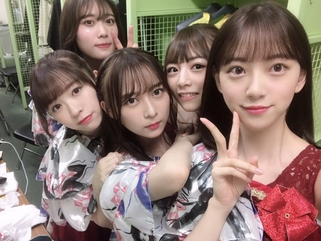
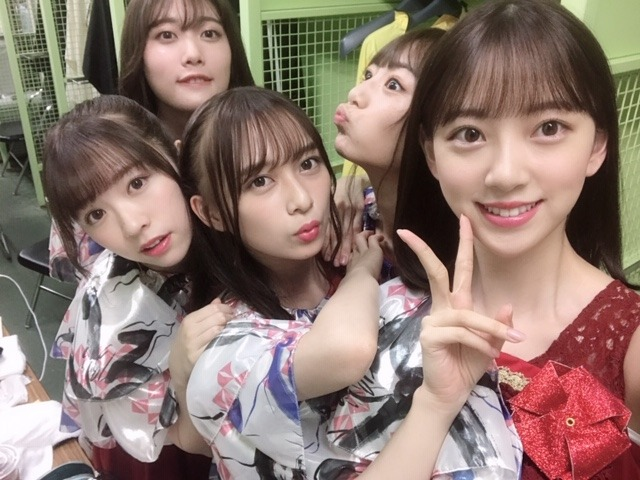
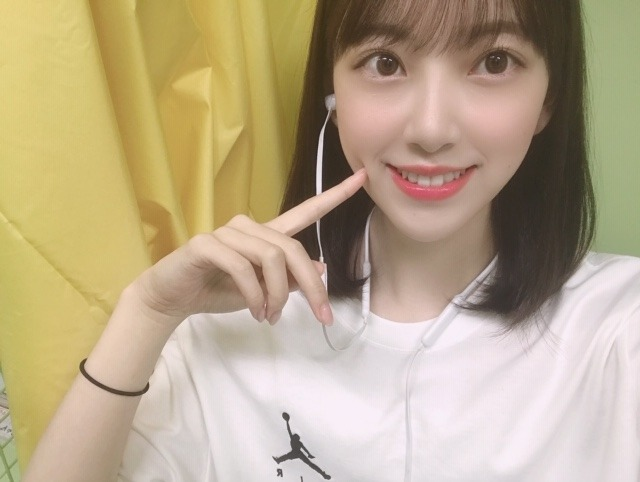
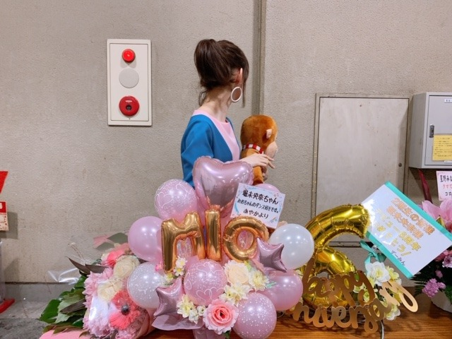

2019/0831Sat晴れましたね
やほ~
楽屋でもずーっとずーっと話してます☺︎
2期生仲良すぎる❤︎❤︎


昨日は本番前に純奈の香水をつけたんだ☺︎
今日も楽しみましょうね~
タオル、サイリウム、うちわすっごく見えます❤︎
ありがとうございます、！

関係ない話をすると、今日お猿さんがたくさん
夢に出てきました！！
こんなに猿が出てきたの初めて！
楽屋でもよく猿トークはするんだけど夢にまで出てきてくれて、夢の中のわたしは夢だと思ってないから
本当に幸せでした☺︎
みんな小さくてウキウキ走り回ってたんだけど
毛がふかふかの丸々としたお猿さんが一匹いて大人しくて、私にね、ゆっくり抱きついてきたの！
もーーーーー、かわいすぎました
ふわっふわ☺︎
で、ずっとコアラみたいに私に抱きついてるから
私もぎゅってしてたんだけどそのまま
立ち上がろうとしたら意外と重くて。笑
一旦降りてね〜^ ^
って降ろしました。笑

癒されたなあ
今日もライブ頑張れるなあ
夏の思い出作りましょうね☺︎
ではは
2019/08/31 09:30
コメント(331)
未央奈ちゃん、お疲れさまです。
今日が最終日ですね。
新旧キャプテンの前で
２期生の姿をみせつけましょう！
まかせてねって！！！
喉の調子は大丈夫ですか。
思いっきり楽しんでくださいね！
このタイミングでのブログ、
とても嬉しかったです！！！
これからも未央奈ちゃんのペースで
らしく、頑張ってください！！！
応援しています！！！
今日が最終日ですね。
新旧キャプテンの前で
２期生の姿をみせつけましょう！
まかせてねって！！！
喉の調子は大丈夫ですか。
思いっきり楽しんでくださいね！
このタイミングでのブログ、
とても嬉しかったです！！！
これからも未央奈ちゃんのペースで
らしく、頑張ってください！！！
応援しています！！！
未央奈ちゃん更新ありがとー！
神宮盛り上がってるぜー！！
いぇーい！( ≧∀≦)ノ
二期生好き！
やっぱ二期生だな！だ！な！
先日、夢に未央奈ちゃんが出てきたよ！
ちょっと会話しただけだけど
その日は１日頑張れたなー。
また出ていただけるとありがたいです。(切実)
今日も夏の思い出作ろうね！
ではではー。
神宮盛り上がってるぜー！！
いぇーい！( ≧∀≦)ノ
二期生好き！
やっぱ二期生だな！だ！な！
先日、夢に未央奈ちゃんが出てきたよ！
ちょっと会話しただけだけど
その日は１日頑張れたなー。
また出ていただけるとありがたいです。(切実)
今日も夏の思い出作ろうね！
ではではー。
めっちゃ可愛かった！
最終日も頑張ってね！
ステバから見守ってます。
最終日も頑張ってね！
ステバから見守ってます。
未央奈好き！
未央奈さん、神宮ライブお疲れ様。
体調はいかがですか？写真を見る限りではとてもお元気そうに見えます。
それにしてもホントにメンバー間の仲が良いですよね。
同期のみならず期生を超えた、この仲の良さも乃木坂46の魅力の1つだと思います。
ライブを心底楽しんでいて、歌いながら自然にこぼれる笑顔がなんとも素敵です。
ライブには一度も行ったことがないので、いつか見に行けたらいいなぁと思っています。
ところでブログ上の2期生が写った2枚の写真、まるで間違い探しの問題になりそうなくらい、撮影位置がブレずに上手に撮れていますね！
間違いいくつあるかな？？
体調はいかがですか？写真を見る限りではとてもお元気そうに見えます。
それにしてもホントにメンバー間の仲が良いですよね。
同期のみならず期生を超えた、この仲の良さも乃木坂46の魅力の1つだと思います。
ライブを心底楽しんでいて、歌いながら自然にこぼれる笑顔がなんとも素敵です。
ライブには一度も行ったことがないので、いつか見に行けたらいいなぁと思っています。
ところでブログ上の2期生が写った2枚の写真、まるで間違い探しの問題になりそうなくらい、撮影位置がブレずに上手に撮れていますね！
間違いいくつあるかな？？
未央奈神宮ファイ＼(^o^)／感想楽しみにしとくよ(^^)
昨日から鹿児島(*´ー｀*)ディズニーオンアイス見てきたよほりぴー感想は帰ってから。笑
フェーズ1終了。
フェーズ2からは、ディズニークラシック、UVERworld、乃木坂46、ＢＬＡＣＫＰＩＮＫ(フェーズ2ラストの予定)と、楽しみが目白押し。笑
未央奈よ！これがへのへのだ！！！(ずっと使いたかった。笑)
がんばみおなー
昨日から鹿児島(*´ー｀*)ディズニーオンアイス見てきたよほりぴー感想は帰ってから。笑
フェーズ1終了。
フェーズ2からは、ディズニークラシック、UVERworld、乃木坂46、ＢＬＡＣＫＰＩＮＫ(フェーズ2ラストの予定)と、楽しみが目白押し。笑
未央奈よ！これがへのへのだ！！！(ずっと使いたかった。笑)
がんばみおなー
神宮2日目で未央奈から2回もレス貰えて嬉しかったです一生の思い出ですありがとうございました！！
こんにちは～
、、神宮ライブ、、ラストの、今日、晴れそうだね～
夢の意味は、、はっきりしていて、、玲香キャプテンが、、去る～サル～猿、、って、、思いと、、
、、サルは、、無意識の中の、、自由で、、野生の象徴だから、、
、、たくさんの猿が、、出てきたことは、、ライブで、、
、、意識も、無意識も、最大限に、、解放されてる、、ってことだね～
、、今日は、、通り雨と、、その後の晴れ間が、、ありそうな気がする、、
、、じゃあ、、ライブ、、楽しんでね～
、、神宮ライブ、、ラストの、今日、晴れそうだね～
夢の意味は、、はっきりしていて、、玲香キャプテンが、、去る～サル～猿、、って、、思いと、、
、、サルは、、無意識の中の、、自由で、、野生の象徴だから、、
、、たくさんの猿が、、出てきたことは、、ライブで、、
、、意識も、無意識も、最大限に、、解放されてる、、ってことだね～
、、今日は、、通り雨と、、その後の晴れ間が、、ありそうな気がする、、
、、じゃあ、、ライブ、、楽しんでね～
未央奈ちゃん。ブログありがとう！さあー、今日は、真夏の全国ツアー神宮 最終日おーいに、盛り上がろうぜ。今日参戦します。未央奈よろしく！
ゼンツ二日目、お疲れ様でした。
そして忙しい中、ブログ更新ありがとう〜
本日最終日、悔いを残さないように頑張ってください。
全力で応援します。
そして忙しい中、ブログ更新ありがとう〜
本日最終日、悔いを残さないように頑張ってください。
全力で応援します。
未央ちゃん
ブログ更新ありがとう
ライブ頑張ってね
体調気をつけてね
ブログ更新ありがとう
ライブ頑張ってね
体調気をつけてね
未央奈ちゃん、ブログ更新ありがとうございます！
2期生の写真、ありがとうございます！
僕は、神宮の1日目に行ったのですが、公演前に2期生のドキュメンタリーが流れたので、もうそれを観て少し泣いちゃいました。
改めて、2期生のみんなへの愛が強くなりますね。
大好きなお猿さんが、夢に出てきてよかったですね！
好きな人やものが夢に出てくると、とても幸せな気持ちになりますよね！！
今日は、神宮最終日、れかたんのラストライブ！
素敵な1日にしましょうね！！
僕はライブビューイングで、しっかり観届けます！！
未央奈ちゃん、大好きです
2期生の写真、ありがとうございます！
僕は、神宮の1日目に行ったのですが、公演前に2期生のドキュメンタリーが流れたので、もうそれを観て少し泣いちゃいました。
改めて、2期生のみんなへの愛が強くなりますね。
大好きなお猿さんが、夢に出てきてよかったですね！
好きな人やものが夢に出てくると、とても幸せな気持ちになりますよね！！
今日は、神宮最終日、れかたんのラストライブ！
素敵な1日にしましょうね！！
僕はライブビューイングで、しっかり観届けます！！
未央奈ちゃん、大好きです
みおなちゃん更新ありがとう╰(*´︶`*)╯♡
写真もありがとう(*´꒳`*)
仲良しさんだね（╹◡╹）♡
お猿さんがたくさん夢に出てきて良かったね(๑>◡<๑)
真夏の全国ツアー神宮公演1日目と2日目お疲れ様でした！
いよいよ最終日ですね
れいかちゃんとも最後のライブとなりますが楽しんでね♪(๑ᴖ◡ᴖ๑)♪
ライブビューイングのチケット取れたから映画館で見守ってますね
写真もありがとう(*´꒳`*)
仲良しさんだね（╹◡╹）♡
お猿さんがたくさん夢に出てきて良かったね(๑>◡<๑)
真夏の全国ツアー神宮公演1日目と2日目お疲れ様でした！
いよいよ最終日ですね
れいかちゃんとも最後のライブとなりますが楽しんでね♪(๑ᴖ◡ᴖ๑)♪
ライブビューイングのチケット取れたから映画館で見守ってますね
夢の中でも&動物にも愛される堀ちゃん(*´-`) 夏も終わりの空気になってきてるけど、適度に体休めてあげながら1日1日お仕事ガンバァ☆
二期生仲良くて良きです
ん～、猿になりてぇなあ…
すみません
by：翔んで9メートル
ん～、猿になりてぇなあ…
すみません
by：翔んで9メートル
こんにちは‼︎
どうやら今日も晴れそうですね♪
今日は、真夏の全国ツアー2019の最終日。
そして、桜井キャプテンの乃木坂としての最後の活動になります。
レコメンでの桜井キャプテンのコメント。
桜井キャプテン、未央奈の頑張りや意識の変化など、ちゃんと見てくれているんですね♪
なんか、そういうのってとっても嬉しいですよね…‼︎
桜井キャプテンとしても、そういった未央奈の姿を見て、『これからの乃木坂は安泰だな』って安心したと思います。
実際、未央奈は後輩にもすごく慕われているし、ますます乃木坂では欠かせない人物になっていますね‼︎
真夏新キャプテンも、今は不安でいっぱいなはず。
頑張ってみんなで支えてあげてください…‼︎
2期生、とっても仲良しですね♪
3期生や4期生もそうですが、やっぱり、同期の結束って強いんですね‼︎
加えて、未央奈の場合、期を跨いで仲のいいメンバーがたくさんいますからね♪
橋渡しの役目としても、最適だと思います‼︎
これからも応援してます。
頑張ってください‼︎
ではでは、また。
今日も未央奈にとっていい1日になりますように♪
どうやら今日も晴れそうですね♪
今日は、真夏の全国ツアー2019の最終日。
そして、桜井キャプテンの乃木坂としての最後の活動になります。
レコメンでの桜井キャプテンのコメント。
桜井キャプテン、未央奈の頑張りや意識の変化など、ちゃんと見てくれているんですね♪
なんか、そういうのってとっても嬉しいですよね…‼︎
桜井キャプテンとしても、そういった未央奈の姿を見て、『これからの乃木坂は安泰だな』って安心したと思います。
実際、未央奈は後輩にもすごく慕われているし、ますます乃木坂では欠かせない人物になっていますね‼︎
真夏新キャプテンも、今は不安でいっぱいなはず。
頑張ってみんなで支えてあげてください…‼︎
2期生、とっても仲良しですね♪
3期生や4期生もそうですが、やっぱり、同期の結束って強いんですね‼︎
加えて、未央奈の場合、期を跨いで仲のいいメンバーがたくさんいますからね♪
橋渡しの役目としても、最適だと思います‼︎
これからも応援してます。
頑張ってください‼︎
ではでは、また。
今日も未央奈にとっていい1日になりますように♪
こんにちは！未央奈ちゃん！
いつも、今日も本当にお疲れ様です‼︎m(_ _)m
突然ですが、僕はおっさん…いや、ちょいじいで恐縮ですが(^_^;)未央奈ちゃんを推させて頂こうとコメントさせて頂いておりまするm(_ _)m
…なので今夜の全ツ、ライブビューイングではありますが玲香ちゃんとの楽しいライブを応援させて頂きます‼︎＼(^o^)／
沢山、いーーーっぱい‼︎‼︎玲香ちゃんと、大好きなメンバーと楽しくて幸せな時間をどうぞお過ごし下さい‼︎‼︎
それでは。未央奈ちゃんが健康で、楽しい毎日を過ごせますように…。
実は全ツの初日、名古屋公演は現場で声援を送ってた、まきでしたm(_ _)m
いつも、今日も本当にお疲れ様です‼︎m(_ _)m
突然ですが、僕はおっさん…いや、ちょいじいで恐縮ですが(^_^;)未央奈ちゃんを推させて頂こうとコメントさせて頂いておりまするm(_ _)m
…なので今夜の全ツ、ライブビューイングではありますが玲香ちゃんとの楽しいライブを応援させて頂きます‼︎＼(^o^)／
沢山、いーーーっぱい‼︎‼︎玲香ちゃんと、大好きなメンバーと楽しくて幸せな時間をどうぞお過ごし下さい‼︎‼︎
それでは。未央奈ちゃんが健康で、楽しい毎日を過ごせますように…。
実は全ツの初日、名古屋公演は現場で声援を送ってた、まきでしたm(_ _)m
ウッキー♡
今日はゴリラの夢をみましたよ～笑
お猿さんの夢の事ばかり気にしてたら、、
子供ゴリラに追いかけられる夢をみました♪
みおちゃんの影響力はとっても絶大です～♡
今日はいよいよ夏祭りの最終日ですねー！！
キラキラした星達もいっぱい応援してます☆
大きな花火を打ち上げて下さいね～☺
今日はゴリラの夢をみましたよ～笑
お猿さんの夢の事ばかり気にしてたら、、
子供ゴリラに追いかけられる夢をみました♪
みおちゃんの影響力はとっても絶大です～♡
今日はいよいよ夏祭りの最終日ですねー！！
キラキラした星達もいっぱい応援してます☆
大きな花火を打ち上げて下さいね～☺
昨日はゆっくり寝れた？何の夢をみて寝たのかな？
堀ちゃん頑張って
暑さを吹き飛ばせ
暑さを吹き飛ばせ
私は怖い夢みました～笑笑
最終日、楽しんでくださいね♪
玲香ちゃんとも良い思い出を
作ってください(*´∇｀*)
最終日、楽しんでくださいね♪
玲香ちゃんとも良い思い出を
作ってください(*´∇｀*)
ブログ更新ありがとう！
神宮２日間お疲れ様でした❗
今日は最終日ですね！！
そして桜井玲香さんの最終日でもあるんですね。
楽しんで、玲香さんと良い思い出を作ってください❗
二期生の仲良いですね
お猿さんの夢楽しそうですね✨
では、今日も体調に気を付けて頑張ってね
私は、北海道に出張のためライブ観れないけどこっちから応援してます
神宮２日間お疲れ様でした❗
今日は最終日ですね！！
そして桜井玲香さんの最終日でもあるんですね。
楽しんで、玲香さんと良い思い出を作ってください❗
二期生の仲良いですね
お猿さんの夢楽しそうですね✨
では、今日も体調に気を付けて頑張ってね
私は、北海道に出張のためライブ観れないけどこっちから応援してます
こんにちは！
いよいよ、最終日だね
長いようであっという間の夏でした
玲香の最後の勇姿
しっかりとこの目に焼き付けます！！
ありがとう玲香ちゃん
さようならっ！
あ〜もう、今日は
死ぬ気で応援します！
もう、死んでもいいや！
力の限り声援送ります！
神宮の空に響き渡れ！！
乃木坂大好きですっ！！！
いよいよ、最終日だね
長いようであっという間の夏でした
玲香の最後の勇姿
しっかりとこの目に焼き付けます！！
ありがとう玲香ちゃん
さようならっ！
あ〜もう、今日は
死ぬ気で応援します！
もう、死んでもいいや！
力の限り声援送ります！
神宮の空に響き渡れ！！
乃木坂大好きですっ！！！
未央奈ちゃんブログありがとう！
いよいよ今日が全ツ最終日だね！喉の調子は大丈夫？無理しすぎないでね(^^)
僕は神宮行けないんですけど、遠くから応援してます！
来年は絶対神宮行くね！！それじゃあ頑張って！
いよいよ今日が全ツ最終日だね！喉の調子は大丈夫？無理しすぎないでね(^^)
僕は神宮行けないんですけど、遠くから応援してます！
来年は絶対神宮行くね！！それじゃあ頑張って！
未央奈やほ～
今回も爆上がりで興奮まだ冷めないよw
今日の千秋楽頑張ってね！
来年は沢山、未央奈コールしたい！
今回も爆上がりで興奮まだ冷めないよw
今日の千秋楽頑張ってね！
来年は沢山、未央奈コールしたい！
やほ～
二日目参戦してまだまだテンション上がったままで、向こう
2週間はこのテンション保てそう笑
今回、未央奈コールたりなかったので来年は俺に未央奈コールさせて下さい
二日目参戦してまだまだテンション上がったままで、向こう
2週間はこのテンション保てそう笑
今回、未央奈コールたりなかったので来年は俺に未央奈コールさせて下さい
あきちゃんです、こんにちはみおなちゃん昨日グッズ買いに行きました、みおなちゃんと沙友理ちゃんと明日から新キャプテンの秋元真夏ちゃんのタオルとうちわ買いました、も東京公演限定生写真買ったよ、そしたらみおなちゃんと沙友理ちゃんがいっぱい入っててハッピーでした。もうすぐ夏の全国ツアー最後のツアーで桜井玲香ちゃんの卒業コンサートが始まるね、僕わ映画館から応援してます。来年わ当たるといいな、乃木坂46のなかで一番みおなちゃんがだいファンです。そしてあとみ3日でシングルでるね、全種類買います。24枚目のシングルの全国握手会であいましょう。ちなみに乃木坂46さんわ全国握手会初めてなのでよろしくお願いします。コメントはいるまで何回も書きます。❤❤❤❤❤❤❤❤❤❤❤❤❤❤❤❤❤❤❤❤❤❤❤❤❤❤❤❤❤❤❤❤❤❤❤❤❤❤❤❤❤❤❤❤❤❤❤❤❤❤❤❤
今日、東京は晴れなんだね。
昨日、掘ちゃん晴れ乞いしてたみたいだからその効果が現れたんだねー！
おまけにお猿さんが夢に出てくるなんて、掘ちゃんは幸運の持ち主だよ。
明日はライブ行くので、その晴れ女パワーでどうか晴れにしてください。笑
昨日、掘ちゃん晴れ乞いしてたみたいだからその効果が現れたんだねー！
おまけにお猿さんが夢に出てくるなんて、掘ちゃんは幸運の持ち主だよ。
明日はライブ行くので、その晴れ女パワーでどうか晴れにしてください。笑
ライブ行きたい。
未央奈ちゃんかわいい
未央奈ちゃんかわいい
最終ライブ頑張ったようだな❗
ゆっくり休んでくれ❗
うまい飯でも食ってくれ❗
ゆっくり休んでくれ❗
うまい飯でも食ってくれ❗
みおな、ブログ更新ありがとう！
神宮初日と二日目いったよ～！
最高だったよ！
初日は雨が降り出して
合羽持ってきてなかったから
濡れる～って思ったけど
晴れてよかった！
神宮最終日、自宅から応援してるね～！
ライブ真っ只中だと思うけど
ふぁいと～！
最後まで楽しんで～！
神宮初日と二日目いったよ～！
最高だったよ！
初日は雨が降り出して
合羽持ってきてなかったから
濡れる～って思ったけど
晴れてよかった！
神宮最終日、自宅から応援してるね～！
ライブ真っ只中だと思うけど
ふぁいと～！
最後まで楽しんで～！
お疲れ様です(^O^)
トルティーヤくんどうなってるのかな？
応援してます！！！
トルティーヤくんどうなってるのかな？
応援してます！！！
楽しい夏が終わってしまったね。今年は何事もなく天候に恵まれたほうだったね！
本当お疲れー！
今日近くまで行ったら、ちょうど未央奈ちゃんが
歌ってた！
本当お疲れー！
今日近くまで行ったら、ちょうど未央奈ちゃんが
歌ってた！
未央奈～、見つけた。
カズミンもまいやんも超絶きれいだった。
でも、今日だけは玲香様、いっぱい見れて、騒げて、歌って、踊って、花火も見れて大満足なライブでした。お疲れ様でした。ゆっくり休んでくださいね。
カズミンもまいやんも超絶きれいだった。
でも、今日だけは玲香様、いっぱい見れて、騒げて、歌って、踊って、花火も見れて大満足なライブでした。お疲れ様でした。ゆっくり休んでくださいね。
未央奈～！
取り急ぎコメントを。帰りの電車でしております！！
初乃木坂ライブ！神宮！最終日！！
最高に楽しかった！！すごく近くでは見れなかったけどトロッコで来てくれたときに未央奈タオルとサイリウムでアピールしたよ！
本当に幸せでした！一曲目からなぜか泣きました。
多分参加できることへの感動でした！！
またきちんとコメントするね！
未央奈もお疲れさま！
ゆっくり寝てね♪
取り急ぎコメントを。帰りの電車でしております！！
初乃木坂ライブ！神宮！最終日！！
最高に楽しかった！！すごく近くでは見れなかったけどトロッコで来てくれたときに未央奈タオルとサイリウムでアピールしたよ！
本当に幸せでした！一曲目からなぜか泣きました。
多分参加できることへの感動でした！！
またきちんとコメントするね！
未央奈もお疲れさま！
ゆっくり寝てね♪
みおな
真夏の全国ツアーお疲れ様でした
神宮2日目の公演に参加させて頂きました
始まる前もすごく楽しみにしていて、終わった後も来れてよかったと心の底から、思えるくらい楽しかったです
天気も何とか晴れてよかったね！
むしろいい感じに曇ってて、暑すぎずライブ日和だったと思います（てるてる坊主と俺の晴れ男が効いたかな笑）
ライブでは、みおなのタオルとオレンジと白でサイリウム持ってて、みおなが2回ゴンドラで目の前まで来たんだけど、2回とも俺に気付いて指差して手を振って気付いてくれました（しっかり目が合って2回もだから間違いないです笑）
いわゆるレスという物ですが、めちゃくちゃ嬉しかったです
三塁側のステージ真横のギリ見える席だったけど、みおなに気付いてもらっただけで、もう満足です
本当にありがとう！
握手会の時もだけど、ライブのみおな、すごく可愛かったです（みおなのMCも可愛かった）
シンプルに大好きです
ライブのブログも落ち着いたら書いてください
セトリも好きな曲がたくさんあって最高でした
改めてめっちゃ楽しかったです
またライブが決まったら行くので、これからも頑張って下さい
ありがとうございました
真夏の全国ツアーお疲れ様でした
神宮2日目の公演に参加させて頂きました
始まる前もすごく楽しみにしていて、終わった後も来れてよかったと心の底から、思えるくらい楽しかったです
天気も何とか晴れてよかったね！
むしろいい感じに曇ってて、暑すぎずライブ日和だったと思います（てるてる坊主と俺の晴れ男が効いたかな笑）
ライブでは、みおなのタオルとオレンジと白でサイリウム持ってて、みおなが2回ゴンドラで目の前まで来たんだけど、2回とも俺に気付いて指差して手を振って気付いてくれました（しっかり目が合って2回もだから間違いないです笑）
いわゆるレスという物ですが、めちゃくちゃ嬉しかったです
三塁側のステージ真横のギリ見える席だったけど、みおなに気付いてもらっただけで、もう満足です
本当にありがとう！
握手会の時もだけど、ライブのみおな、すごく可愛かったです（みおなのMCも可愛かった）
シンプルに大好きです
ライブのブログも落ち着いたら書いてください
セトリも好きな曲がたくさんあって最高でした
改めてめっちゃ楽しかったです
またライブが決まったら行くので、これからも頑張って下さい
ありがとうございました
今日もありがとう。おやすみ
堀さん、こんばんは。
真夏の全国ツアー無事終えられて良かったです。
神宮3日目のライブビューイング見てきました。メンバー同士やファンとグループの間の絆に感動しました。行って本当に良かったです。
堀さんの変顔もスクリーンで見れて満足しました。変顔風情じゃ微動だにしない美貌で居てくださってありがとうございます。それと泣いた後の堀さんがとてつもなくとんでもなく美しくて驚きました。
あと自由の彼方もよかったです。何となく、喪失感だけの状態から生命力が出始めたって流れに見えて、歌詞以上の意味を演出で伝えてもらった気がしました。ステージ上で観客を魅了できるという特殊技能を持つ堀さんを尊敬しました。
曲として一番好きだったのは「僕のこと、知ってる? 」でした。まず最初の後輩さん達を手招きする所でちょっと泣きそうになりました。それと歌詞の自分探し居場所探しの感じが、グループに貢献しようとするアイドルやスタッフの感情と、知らない人同士でも一体になるためにライトを振るファンの感情と一致してる気がして、感情が溶け合ってくその様子に圧倒されました。
BRODYではグループを背負ってポジティブに進んでいく姿勢を先輩さん達に感じたと言ってたので、卒業や加入でメンバーが変わっていくなかで堀さんも後輩さん達に言葉や背中で伝えていってくださいね。そのためにも、まずは3日間やり切った分、なんとか休んで体力回復させてくださいね。
真夏の全国ツアー無事終えられて良かったです。
神宮3日目のライブビューイング見てきました。メンバー同士やファンとグループの間の絆に感動しました。行って本当に良かったです。
堀さんの変顔もスクリーンで見れて満足しました。変顔風情じゃ微動だにしない美貌で居てくださってありがとうございます。それと泣いた後の堀さんがとてつもなくとんでもなく美しくて驚きました。
あと自由の彼方もよかったです。何となく、喪失感だけの状態から生命力が出始めたって流れに見えて、歌詞以上の意味を演出で伝えてもらった気がしました。ステージ上で観客を魅了できるという特殊技能を持つ堀さんを尊敬しました。
曲として一番好きだったのは「僕のこと、知ってる? 」でした。まず最初の後輩さん達を手招きする所でちょっと泣きそうになりました。それと歌詞の自分探し居場所探しの感じが、グループに貢献しようとするアイドルやスタッフの感情と、知らない人同士でも一体になるためにライトを振るファンの感情と一致してる気がして、感情が溶け合ってくその様子に圧倒されました。
BRODYではグループを背負ってポジティブに進んでいく姿勢を先輩さん達に感じたと言ってたので、卒業や加入でメンバーが変わっていくなかで堀さんも後輩さん達に言葉や背中で伝えていってくださいね。そのためにも、まずは3日間やり切った分、なんとか休んで体力回復させてくださいね。
唐突なお猿トークだね（笑）
きいちゃんたちと天気の子を模した事しただけあってしっかり晴れて良かったね！
きいちゃんたちと天気の子を模した事しただけあってしっかり晴れて良かったね！
堀ちゃん！神宮ライブ千秋楽お疲れ様でした！
そして真夏の全国ツアー完走、本当にお疲れ様でした！！
別のお仕事も多い中、体調を崩すことなく全てのライブに参加するのって中々難しいと思いますが、全参加凄いです(o^^o)
今日のライブ、本当に最高でした！！！
最高の夏の締めくくりになりました！！！
自由の彼方の堀ちゃんめちゃくちゃかっこよかった…！
腕の動きがとかではなかったですね、あらゆる堀ちゃんの動きが綺麗でなめらかでしなやかで、淀みのない動きに僕の目は釘付けでした…(*´ー｀*)
裸足でSummer、サンダル脱ぎ捨て隊として堀ちゃんきいちゃんみり愛ちゃんでいるのを見て、嬉しくもあり、なんだか少し泣きそうになってしまいました笑
個人的にハダサマのサンダル脱ぎ捨て隊が大好きで思い入れがめちゃくちゃ強いんです( ´ ▽ ` )
乗り物に乗って回ってきてくれたときも、堀ちゃんが2回近くまで来てくれてめっちゃ嬉しかったです！(o^^o)
目は…正直合ってないような気はしますが…いやもしかしたらチラッとあったのかもしれません笑
それでもタオルを広げて声を送りました、熱と愛だけが少しでも届いてたらいいなあ( ´ ▽ ` )
いやー、ライブの時間が濃密すぎて、感じたことが多すぎて、書きたいことが多すぎて、上手くまとめられません笑
でもなるべく早く伝えたいと思ってコメントしに来てしまってます、また堀ちゃんがライブについて書いてくれた記事でも改めてコメントもさせてください(^^)笑
とにかく間違いなく最高に楽しい時間でした！
夏の思い出も、玲香さんとの思い出も、堀ちゃんたちと一緒に作れたと思います(o^^o)
今まで当たり前のようにいた存在がいなくなる、もちろん寂しくて悲しくてずっといてほしいのが本音ですが、今日の玲香さんの言葉を聴いて、そんなことも思ってられないなと( ´ ー ` )
今後も絶対に変わらないことは、今の乃木坂46が大好きで、これからの乃木坂46が大好きで、玲香さんたち卒業していったみなさんがいたこれまでの乃木坂46も大好きだということです！
これからも心の底から全力で応援させてください、よろしくお願いします(o^^o)
では！お疲れだと思うので、たくさん寝て野菜と美味しいものたくさん食べて、みんなと穏やかな時間を過ごしてください！
明日からもずっと堀ちゃんのこと、乃木坂のこと大好きで応援してます(o^^o)
多分またすぐコメントしに来ますー！笑
そして真夏の全国ツアー完走、本当にお疲れ様でした！！
別のお仕事も多い中、体調を崩すことなく全てのライブに参加するのって中々難しいと思いますが、全参加凄いです(o^^o)
今日のライブ、本当に最高でした！！！
最高の夏の締めくくりになりました！！！
自由の彼方の堀ちゃんめちゃくちゃかっこよかった…！
腕の動きがとかではなかったですね、あらゆる堀ちゃんの動きが綺麗でなめらかでしなやかで、淀みのない動きに僕の目は釘付けでした…(*´ー｀*)
裸足でSummer、サンダル脱ぎ捨て隊として堀ちゃんきいちゃんみり愛ちゃんでいるのを見て、嬉しくもあり、なんだか少し泣きそうになってしまいました笑
個人的にハダサマのサンダル脱ぎ捨て隊が大好きで思い入れがめちゃくちゃ強いんです( ´ ▽ ` )
乗り物に乗って回ってきてくれたときも、堀ちゃんが2回近くまで来てくれてめっちゃ嬉しかったです！(o^^o)
目は…正直合ってないような気はしますが…いやもしかしたらチラッとあったのかもしれません笑
それでもタオルを広げて声を送りました、熱と愛だけが少しでも届いてたらいいなあ( ´ ▽ ` )
いやー、ライブの時間が濃密すぎて、感じたことが多すぎて、書きたいことが多すぎて、上手くまとめられません笑
でもなるべく早く伝えたいと思ってコメントしに来てしまってます、また堀ちゃんがライブについて書いてくれた記事でも改めてコメントもさせてください(^^)笑
とにかく間違いなく最高に楽しい時間でした！
夏の思い出も、玲香さんとの思い出も、堀ちゃんたちと一緒に作れたと思います(o^^o)
今まで当たり前のようにいた存在がいなくなる、もちろん寂しくて悲しくてずっといてほしいのが本音ですが、今日の玲香さんの言葉を聴いて、そんなことも思ってられないなと( ´ ー ` )
今後も絶対に変わらないことは、今の乃木坂46が大好きで、これからの乃木坂46が大好きで、玲香さんたち卒業していったみなさんがいたこれまでの乃木坂46も大好きだということです！
これからも心の底から全力で応援させてください、よろしくお願いします(o^^o)
では！お疲れだと思うので、たくさん寝て野菜と美味しいものたくさん食べて、みんなと穏やかな時間を過ごしてください！
明日からもずっと堀ちゃんのこと、乃木坂のこと大好きで応援してます(o^^o)
多分またすぐコメントしに来ますー！笑
初日参戦しました。毎年初日は土砂降りやからある程度覚悟してたけど最初の方だけやったね( ˙꒳˙ )
3日間お疲れ様でした(*´ω｀*)
3日間お疲れ様でした(*´ω｀*)
みおな
未央奈ちゃん、おはようございます。
昨夜の神宮ライブに参加しました。とっても濃い楽しい時間をありがとう。
メインステージから一番遠いステージに未央奈ちゃんが来てくれた時に、タオルとペンライトを振ったら気付いてくれてアイコンタクト出来ました。とっても嬉しかった、ありがとう。
ゆっくり休んで体調を整えてくださいね。
乃木坂46と頑張ってるcuteでsmartな未央奈ちゃんを応援しています。
昨夜の神宮ライブに参加しました。とっても濃い楽しい時間をありがとう。
メインステージから一番遠いステージに未央奈ちゃんが来てくれた時に、タオルとペンライトを振ったら気付いてくれてアイコンタクト出来ました。とっても嬉しかった、ありがとう。
ゆっくり休んで体調を整えてくださいね。
乃木坂46と頑張ってるcuteでsmartな未央奈ちゃんを応援しています。
未央奈～！
取り急ぎライブ後にコメントをしたので、伝えきれなかったところをコメントするね！
まず未央奈のユニット、自由の彼方が観れて嬉しかったよ！かっこよかった～！
最後の方玲香ちゃんがスピーチしてるときに後ろの未央奈がいて、そのときの未央奈美しかった…！
そんなバカなでの変顔可愛かったよ！
大きなゴンドラで来てくれたときに、推しメンタオルと白とオレンジのサイリウムふってアピールしたけど、三塁側の女性エリアだったんだけど、ちょっと距離があったからちゃんとアイコンタクトはとれなかったです…。でもこっち見ててくれたから満足です！！
思ったよりもステージ近いなと思いました！
未央奈達の本格的なライブ、真夏の全国ツアーが神宮で観れて本当に幸せだったよ！
玲香ちゃんの最後も見届けることが出来て本当に幸せ者だなと思いました！
またライブ行きたいと心から思ったから行くね！
間違いなく最高の夏の思い出になりました❤️
ありがとう☺️❤️
休めるか分からないけど、ゆっくり休んでね！
取り急ぎライブ後にコメントをしたので、伝えきれなかったところをコメントするね！
まず未央奈のユニット、自由の彼方が観れて嬉しかったよ！かっこよかった～！
最後の方玲香ちゃんがスピーチしてるときに後ろの未央奈がいて、そのときの未央奈美しかった…！
そんなバカなでの変顔可愛かったよ！
大きなゴンドラで来てくれたときに、推しメンタオルと白とオレンジのサイリウムふってアピールしたけど、三塁側の女性エリアだったんだけど、ちょっと距離があったからちゃんとアイコンタクトはとれなかったです…。でもこっち見ててくれたから満足です！！
思ったよりもステージ近いなと思いました！
未央奈達の本格的なライブ、真夏の全国ツアーが神宮で観れて本当に幸せだったよ！
玲香ちゃんの最後も見届けることが出来て本当に幸せ者だなと思いました！
またライブ行きたいと心から思ったから行くね！
間違いなく最高の夏の思い出になりました❤️
ありがとう☺️❤️
休めるか分からないけど、ゆっくり休んでね！
神宮お疲れ様(人´ｴ`*)♪
行けなくて残念( ´△｀)
行けなくて残念( ´△｀)
チャァオ～～!☆彡
綺麗可愛いぃ～～プリンセスみおちゃん、こんにちは～～～⤴️⤴️❕❤️❤️❤️❤️❤️笑顔
梅ちゃんブログの３人写メのみおちゃん❕・・・・
めちゃめちゃ綺麗・綺麗・綺麗可愛いぃ～～ねぇ～～～⤴️⤴️❕❤️❤️❤️❤️❤️笑顔
可愛いぃ～～⤴️⤴️可愛いよぉ～～～⤴️⤴️❕❤️❤️❤️❤️❤️笑顔
今年も真夏の全国ツアーお疲れsummerでした❕❤️❤️❤️❤️❤️笑顔
ライブ３日間連続でしたから～～⤴️⤴️
みおちゃん❕・・・・
お身体ゆっくり休んでくださいねぇ～～❕❤️❤️❤️❤️❤️笑顔
それでは、プリンセスみおちゃんまたねぇ～❕❤️❤️❤️❤️❤️笑顔
☆会津＊ONEより☆彡
未央奈ブログ更新ありがとう！コメント遅くなってごめんね。
ライブお疲れ様！！乃木中で夜明けまで強がらなくてもいいのパフォーマンスみて、泣きそうになった、、感動した、、、！
未央奈ちゃんダンスすごい上手いし、他のメンバーももちろん上手くて一体感がすごい感じられた！
音楽番組での披露も楽しみ〜！
またブログ更新待ってるね！
ライブお疲れ様！！乃木中で夜明けまで強がらなくてもいいのパフォーマンスみて、泣きそうになった、、感動した、、、！
未央奈ちゃんダンスすごい上手いし、他のメンバーももちろん上手くて一体感がすごい感じられた！
音楽番組での披露も楽しみ〜！
またブログ更新待ってるね！
お疲れ様！ゆっくり休んで！
未央奈ちゃん、ひろっしーです！コメント投稿608回目です！
前回はブログ「#24時間TV」にブログの感想を書きました！
時間→「No.388 2019年8月26日 14:59」
いつもブログ更新ありがとうございます！
今回も1週間振り・・・(謝) ごめんなさい(謝)
まずは神宮ライブ3日間お疲れ様でした！
本当に晴れて良かったですね！やっぱり晴れが1番ですよね！雨だとびしょ濡れになりますしステージや花道で滑って転倒する可能性だってありますし、改めて本当に晴れて良かった～！改めてお疲れ様でした！ゆっくり休んでね～！
僕は4月13日に嵐のライブに行ったのですが、ライブ自体が人生初だったので、全てが新鮮で驚きの連発でした！曲のC&Rは完璧ですが(笑)
生の嵐を見れる嬉しさに加え20周年のライブだった事もあり、オープニングの映像で涙目になり5人が現れた瞬間に思わず泣きそうになりましたが、目に焼きつけようと思い、唇を噛み我慢しながら1曲目のC&Rをしていました！
言っている時、約10年、嵐のファンで本当に良かったなと思いました！
また嵐の話になっちゃいました(謝)
ライブに行った方のコメントを見ているだけで幸せな気分になりました！
ファンサしてくれた、目が合った、手を振ってくれた、などのコメント、凄く共感しました！
いつか乃木坂のライブも行きたいな～！
でも、会場の一体感に飲まれそうな気が(不安)
2枚目のきいちゃんの顔良いですね～！
本当に仲良いのが伝わってきます！
Bluetooth楽ですよね！僕は黒持ってま～す！
猿トーク、例え関係なくても凄く嬉しいです！
ここまで読んで頂きありがとうございました！
毎日お仕事お疲れ様です！体調にはくれぐれも気を付けて頑張ってくださいね！
おやすみおな～！
前回はブログ「#24時間TV」にブログの感想を書きました！
時間→「No.388 2019年8月26日 14:59」
いつもブログ更新ありがとうございます！
今回も1週間振り・・・(謝) ごめんなさい(謝)
まずは神宮ライブ3日間お疲れ様でした！
本当に晴れて良かったですね！やっぱり晴れが1番ですよね！雨だとびしょ濡れになりますしステージや花道で滑って転倒する可能性だってありますし、改めて本当に晴れて良かった～！改めてお疲れ様でした！ゆっくり休んでね～！
僕は4月13日に嵐のライブに行ったのですが、ライブ自体が人生初だったので、全てが新鮮で驚きの連発でした！曲のC&Rは完璧ですが(笑)
生の嵐を見れる嬉しさに加え20周年のライブだった事もあり、オープニングの映像で涙目になり5人が現れた瞬間に思わず泣きそうになりましたが、目に焼きつけようと思い、唇を噛み我慢しながら1曲目のC&Rをしていました！
言っている時、約10年、嵐のファンで本当に良かったなと思いました！
また嵐の話になっちゃいました(謝)
ライブに行った方のコメントを見ているだけで幸せな気分になりました！
ファンサしてくれた、目が合った、手を振ってくれた、などのコメント、凄く共感しました！
いつか乃木坂のライブも行きたいな～！
でも、会場の一体感に飲まれそうな気が(不安)
2枚目のきいちゃんの顔良いですね～！
本当に仲良いのが伝わってきます！
Bluetooth楽ですよね！僕は黒持ってま～す！
猿トーク、例え関係なくても凄く嬉しいです！
ここまで読んで頂きありがとうございました！
毎日お仕事お疲れ様です！体調にはくれぐれも気を付けて頑張ってくださいね！
おやすみおな～！


やっぱ１番可愛いね 世界で１番可愛いくて綺麗な未央奈、また観れて楽しかったなぁ❤️
神宮全力で行かさせて貰うよ❤️
後、握手会も行くよ
ではでは❤️